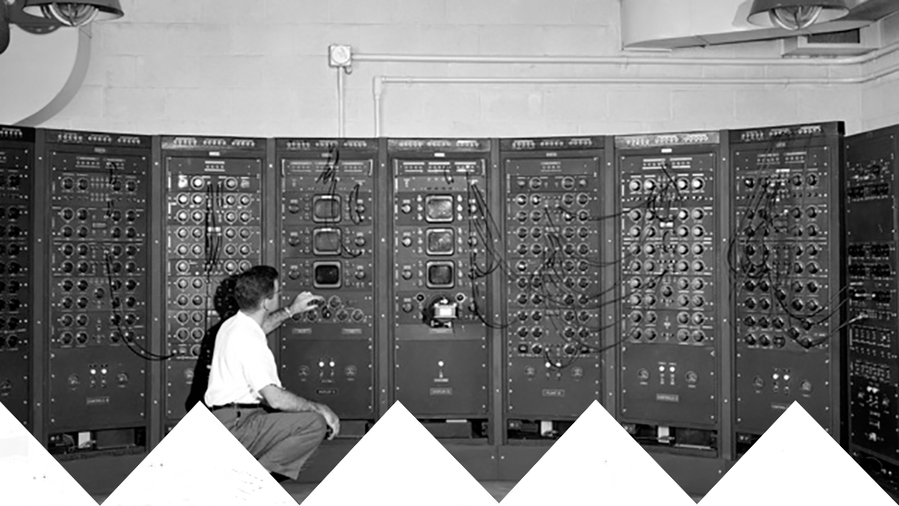

Welcome
Computers have changed the human race for the better. Having the ability to store, view and discover information has greatly changed the way that the human race functions and has allowed for us to make huge leaps in the fields of science and technology.
On this page you will find anything you want to know about electronic storage, in particular the humble hard disk (Hard Drive).

^Lenoir, North Carolina, Google Data Center^

These days, computer hardrives and SSDs can store Terabytes of data, but how much capacity do you really need? For example, you can store 30,000 full HD (1080p) photographs on a 250GB drive but people still want more. The rapid development in data storage technologies has allowed for more capacity in smaller packages. For example, in 2008, 512mb SD cards were fairly average but now SD cards range all the way up to 1TB.
Nowadays, people are storing their data on "the Cloud", a set of servers designed simply to store large amounts of data for the public. Services such as Google Drive, Dropbox and OneDrive allow this service for low or nonexistent cost.